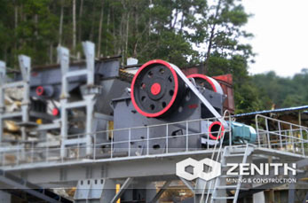

PE Jaw Crusher
PE series jaw crusher, commonly known as the jaw broken through simulation animal two jaw movement, through the moving jaw and gills playing back and forth two jaw plate fixed jaw by the us campaign will material in crushing chamber extrusion, rolling, grinding and broken.Is mainly used for coarse crushing compressive strength less than 320 million mpa, crusher, big crushing ratio, high yield, uniform end product size, simple structure, reliable operation, easy maintenance, low operating costs, etc.Often used as primary crusher and is used for all kinds of stone production line, ore crushing production line.
- Based on the moving jaw trajectories and cavity type is optimized, the best meshing Angle and stroke feature values, make the aircraft under the condition of the same power production is greatly increased
- Based on the model the overall structure and the optimization of weight part, to determine the structure of the flywheel, sheave and the weight of the counterweight block, make the aircraft are improved greatly in terms of vibration.Compared with the same specifications of the jaw crusher, have higher stability
- The high-energy jaw broken machine adopts the E type rack, moving the jaw part adopts eccentric shaft after heat treatment of forging, and equipped with large bearing with labyrinth seal design, equipment is strong and durable, operation is more reliable
- Equipment structure design fully consider the knee replacement operation, and selects the advanced jaw plate and side guard plate bolt system, the jaw plate and the side guard plate fixation is more reliable, more convenient and quick replacement, greatly reduce the downtime
- The jaw broken pattern in traditional gasket type adjustment, adjust and reliable, according to the equipment is equipped with auxiliary DingGang, simplifies the discharging mouth to adjust operation;The engine lubrication system design on the premise of guarantee reliable lubrication, give full consideration to the convenience of operation, greatly reduces the operating difficulty
- The high-energy jaw crusher compact structure, high strength equipment, can crushing all kinds of hard rocks and ores, and compared with specifications of the jaw crusher, covers an area of less, make its can play a bigger role in limited space, suitable for all kinds of crushing process
How to store the jaw cruhser?
- Long-term is not applicable for mechanical equipment such as jaw crusher, is best stored in dry room, if there are special circumstances need to stop outside, must choose a flat on the ground and shop board, with cover cloth cover after parking, the arrangement and layout in the airport, shall ensure that any move in and out of a mechanical are not affected by other mechanical
- Jaw crusher deposit before, should inspect the size of the surface area of antirust paint falls off is to determine by touch-up or evaluated using the method of the machine to spray paint repair, metal exposed part of the rust is best butter
- During long-term storage, should remove the battery of jaw crusher.Place the battery in a dry and freeze, and keep the surface clean and dry, it is forbidden to conducting objects placed on the battery.Dismantle storage battery, the first to cut off the cathode lines, and then cut off the positive line;When installation to connect the positive line first, then connect the cathode lines.Engineering mechanical and electrical systems are negative iron, this order is to prevent when disassembling battery short-circuited.Lead-acid battery charge once a month
- Before the jaw crusher to deposit, drain the cooling water inside the engine, replace the engine oil.New oil is neutral and not generally corrosion of metal parts of the engine.Fill it up with diesel fuel tank to avoid fuel tank rust, such as conditions permit should also add preservatives.During downtime should start the engine once a month, give machinery to be short, the purpose is to make the parts lubrication place to build a new oil film, prevent rust.Should be paid attention to: before start should fill the cooling water, cooling water should be put at the end